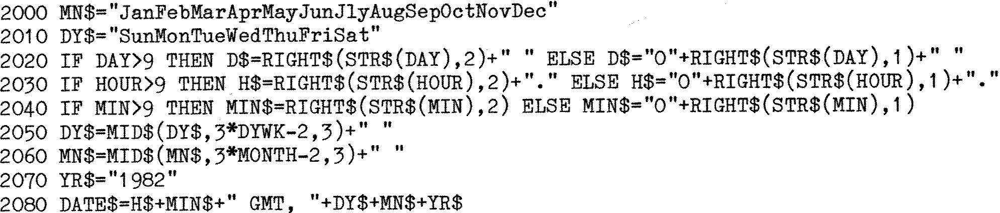

80-Bus News |
November–December 1982 · Volume 1 · Issue 4 |
| Page 34 of 51 |
|---|
In the above case, TM$ will be the variable space for the machine code clock read routine. All that is required is to pass the address of TM$ to the machine code routine. When the Microsoft Basic CALL is used, upto three variables may be passed to the machine code routine in HL, DE and BC. If there are more variables, BC is set to the address of a table of variables and that is passed for the machine code routine to pick up. In this instance only the address of TM$ is required. The VARPTR function returns the address of the string pointer, which holds:
Line 1010 returns the actual address of TM$, ADDR%. Note that this must be an integer variable, as only a 16 bit number can be sent to the machine code routine in HL. Line 1020 CALLs the the machine code routine and ADDR% is passed in HL. The machine code routine places the month, day of week, day, hour, minute and seconds in the first six bytes of TM$ and lines 1030 and 1040 read these back. I would have thought that as the CALL function within Basic can pass variables to a machine code routine, it ought to be able to pass them back, however I can not find out how to do this, so if anyone knows, drop me a line.
The machine code read subroutine is very simple (refer to the program listing READ Routine FOR Gemini GM822), and is a stripped down version of my rewrite of the routines that came with the clock. It need only be a read routine as there is no facility for setting the clock within the logging program. Note, however, as I wish to return the variables as complete integers, I use a times 10 routine to convert the separate nibbles into integers. The routine has been assembled at address 0000H, and is intended to be linked into the compiled Basic program. Any line of code within the listing suffixed by an accent (such as CD 0009’) means that that absolute address would need to be changed if the program were moved elsewhere. As it stands, the TIME routine can not be used with Basic without the compiler. However, as has already been discussed, strings declared within a Basic program are not moved about by Basic until required, so it could be POKEed into a string declared as the first line of the program within the Basic source. In this way, provided that no Basic lines were inserted prior to the declared string, the addresses would be absolute and the absolute code adjusted to suit. Note that this idea will only work with a specific version of the Microsoft Mbasic, as Microsoft have a tendency to move the source buffer addresses about between different versions; also that this technique makes the first line of the program unlistable, as it will contain some 128 bytes of reserved words, junk, and other nasty things.
So, having got the time from the clock routine, what to do with it? Well, one nice exercise is to display it within a Basic program, in the form say, 14.34 GMT, 21 Sep 1982. Not a difficult job, but shows some of the more useful attributes of string manipulation in Basic. Those who have read through the machine code clock setting routines will have noticed similar routines.
The points to note are the way in which the day and month are picked from the string by calculating the relevant point in the string and then using the MID$ function. Note also the way the STR$ function is used within a RIGHT$ function to trucate the numeric variable and return it as a string. In line 2080 it simply becomes process of adding up the strings.
| Page 34 of 51 |
|---|